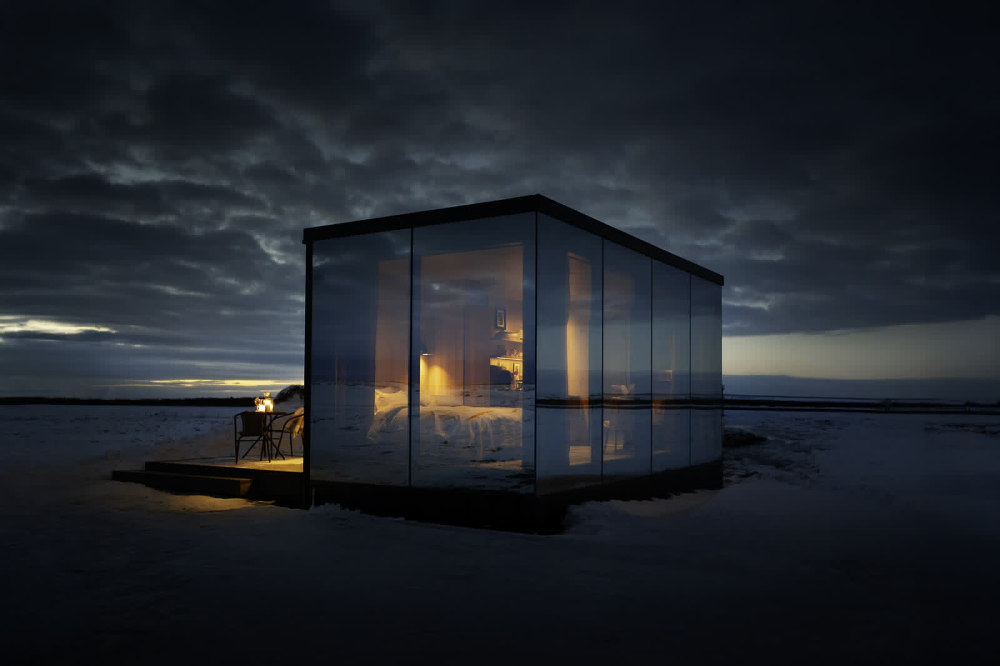
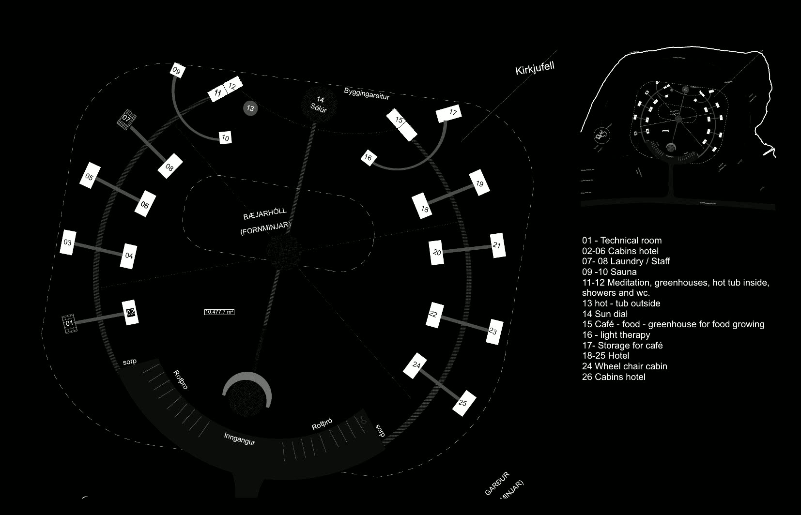
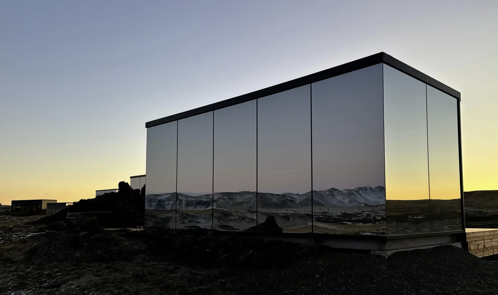
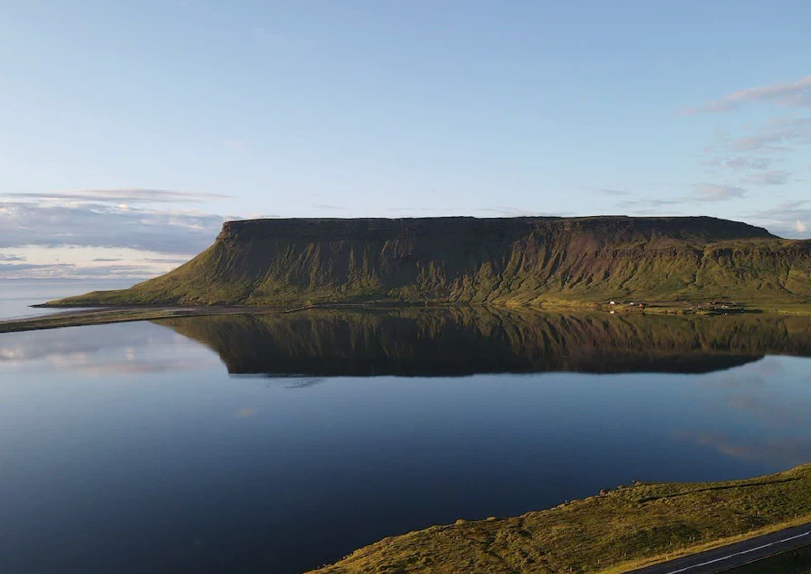

Skerðingsstaðir — District Hive
Heildarskipulag heilsudvalar á Snæfellsnesi — fjórtán speglaðir dvalarklefar raðast í geislamynstur innblásið af íslenskum galdrastöfum, með sjónás beint á Kirkjufell.
Á 7,4 hektara landi Skerðingsstaða vestan Grundarfjarðar er horft yfir Breiðafjörð og til Vestfjarða. Skipulagið tekur mið af staðnum í einu og öllu: fornminjar bæjarhólsins mynda miðju svæðisins, klefarnir raðast um hann í geislamynstri og einn skýr ás liggur í gegnum hólinn beint á Kirkjufell við sjóndeildarhringinn. Um 98% landsins er haldið óröskuðu sem engi og verndarsvæði.
Gist er í fjórtán speglaðum GlassHive-dvalarklefum fyrir tvo, þar sem landslagið speglast í klefunum á daginn og stjörnuhiminninn vakir yfir gestum á nóttunni. Á svæðinu eru einnig heit laug, gufuböð, gróðurhús og skjólgarður hlaðinn úr grjóti sem myndar verndandi boga til suðurs — efnisval sem sækir í basalt og búskaparminjar staðarins.
Ísdal vinnur heildarskipulag svæðisins fyrir District Hive og er verkefnið í hönnun; áætluð opnun er í lok árs 2026.



